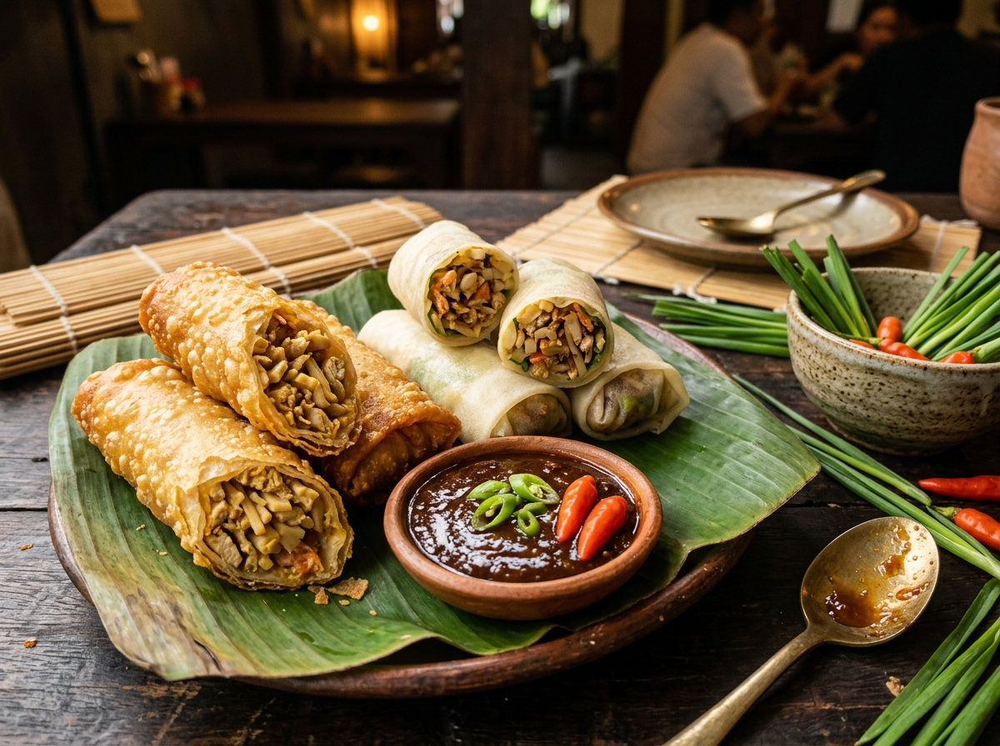

Warisan Pesisir Kota SemarangLumpia Semarang
Gurih Renyah, Manis Rebung & Aroma Udang
Mahakarya akulturasi kuliner Tionghoa dan Jawa abad ke-19. Gulungan kulit tipis berisi rebung bambu betung manis gurih, daging ayam, dan udang cincang yang disajikan basah atau digoreng renyah keemasan.
Rebung Bambu
Udang Segar
Saus Gula Bawang
Daun Lokio